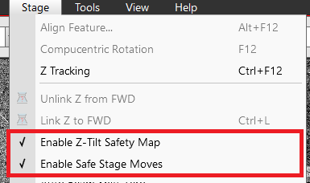

Safety considerations
AutoScript doesn't add an extra safety layer on top of the microscope hardware and software platform. This implies that any actions available and permitted at a given time in the manual user interface application
("Microscope Control") are permissible for automation tasks through AutoScript. While this grants automation maximum flexibility and performance by allowing low-level system operations,
it also places the responsibility of ensuring safety on the automation script authors.
Outlined below are several safety features of the Thermo Fisher SEM systems to contemplate when building safe automation
solutions with AutoScript.
Link stage to free working distance
The specimen stage provides a
"link" functionality, enabling the system to determine the otherwise unknown
specimen height for subsequent stage manipulations. When the stage is linked, system safety is enhanced to mitigate
potential collisions between the moving stage and mechanical parts in the specimen chamber.
However, even in the linked state, certain collisions cannot be entirely prevented, such as those involving insertable
devices like detectors, gas needles, or the manipulator.
It's crucial to exercise caution when manipulating the stage with devices inserted or when inserting these devices.
For detailed guidelines on the conditions required for device insertion, refer to the SEM user manual,
which provides specific recommendations based on the type and mechanical properties of the devices.
Z-Tilt safety map and Stage safe moves
The "Z-Tilt safety map" and "Safe stage moves" configuration options are available on most of the supported SEM systems
to enhance the safety of stage movements. These options can be accessed from the "Stage" menu in the Microscope Control application.
Activating or deactivating these options controls the system-wide behavior,
affecting both manual operations in Microscope Control and automation tasks executed via AutoScript.

Checking the "Enable Z-Tilt Safety Map" item imposes additional pre-configured restrictions on stage movement at high tilt angles
to avoid collision with the final lens.
When "Enable Safe Stage Moves" is checked, the stage will be lowered in the Z coordinate before executing larger movements
in any axis at high tilt angles. This precaution helps prevent collisions with the final lens.
Both options are specifically designed only for flat samples. Also, both functions
require the stage to be linked to free working distance.
In the current version of AutoScript, controlling the two aforementioned safety features cannot be done directly from script.
Emergency stop
Pressing the ESC key in the Microscope Control application immediately halts all ongoing stage or compustage movements.
There isn't a direct equivalent function within the AutoScript product. Aborting the script after
it has initiated a stage movement won't stop that movement, as the command is already being executed or
scheduled for execution on the server side. Similarly, pressing the
Stop button in AutoScript Runner or PyCharm does not terminate any ongoing commands.
Nevertheless, pressing ESC in Microscope Control does terminate a stage movement initiated by AutoScript
if it's currently in progress, causing the calling function
(absolute_move(),
relative_move() or
move_to_device())
to finish with an exception. If this exception is not caught and ignored in the client code, the script execution will be interrupted.
The same behavior applies to compustage movements.